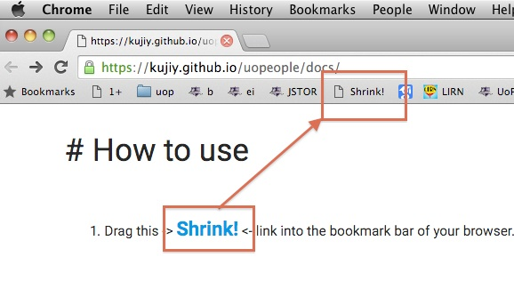

# UoPeople
Convenient Tools for Students of University of the People
I thought it's convenient if I can shrink all posts in the Discussion Forums.
So I made a bookmarklet to shrink all posts in the discussion forum.
# How to use
- Drag this -> Shrink!
<- link into the bookmark bar of your browser.

- Open any discussion forum in moodle
- Click the bookmarklet that you dragged into your bookmark bar
- If all of the posts are shrunk in short boxes, it means working correctly.
- Example: